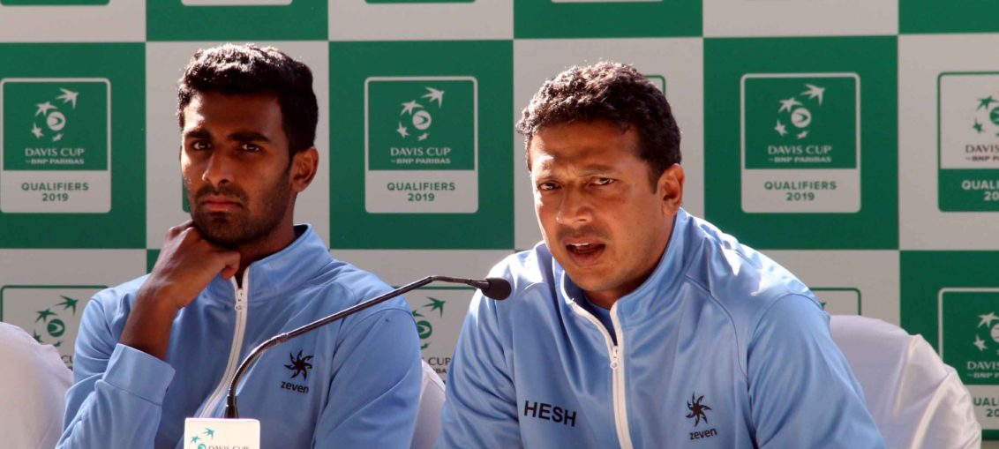

Posted at Date: February 02, 2019
Credit : রাইট স্পোর্টস ওয়েব ডেস্ক
ডবলস জিতলেও ভারতের প্রত্যাশিত বিদায়

টেনিস বিশ্বকাপের মূলপর্বে পৌঁছল ইতালি। কলকাতার সাউথ ক্লাবে ভারতকে ঘাসের কোর্টে হারাল ৩-১। শেষ সিঙ্গলস খেলার দরকার পড়েনি! সকালে ভারতকে ফিরিয়ে এনেছিলেন রোহন বোপান্না আর দিবিজ শরন। ডবলসে ইতালিকে এই টাইয়ের একমাত্র ম্যাচে হারিয়ে। ১০৩ মিনিট, তিন সেটের ম্যাচে ৪-৬, ৬-৩, ৬-৪ গেমে জিতে। কিন্তু, ফিরতি সিঙ্গলসে ভারতের সেরা অস্ত্র প্রজ্ঞেশ গুনেশ্বরন আবার হেরে গেলেন ১-৬, ৪-৬ গেমে, আন্দ্রেয়াস সেপ্পির কাছে। ফলে, পঞ্চম ম্যাচ অর্থহীন হয়ে যাওয়ায় সাউথ ক্লাবে ডেভিসোৎসবে দাঁড়ি পড়ে গেল শনিবারের বারবেলায়!
● ডবলসে ফিরে-আস
দুর্দান্ত বললেও কম। প্রথম দিন দুটি সিঙ্গলসেই হেরে ০-২ পিছিয়ে খেলতে নেমেছিল ভারত। দিবিজ শরন ডেভিস কাপে প্রথম ম্যাচ খেলেছিলেন ২০১২ সালে। সাত বছর পর ফিরলেন শুধু নয়, ভারতকে ফেরানোর পেছনেও তিনিই। সিনিয়র-পার্টনার রোহন বোপান্না যেখানে আনফোর্সড এরর-এর জালে বন্দি, শরন নির্ভরতার প্রতিমূর্তি হয়ে উঠেছিলেন শুরু থেকেই। প্রত্যাশামতো, ইতালির অক্রীড়ক অধিনায়ক কোরাদো বারাৎজুত্তি ডবলসে নামাননি মার্কো চেচ্চিনাতোকে। সিঙ্গলসে প্রজ্ঞেশকে হারিয়ে আত্মবিশ্বাসে টগবগে মাত্তেও বেরেত্তিনিকে বেছে নিয়েছিলেন অভিজ্ঞ সিমোনে বোলেল্লির সঙ্গে। প্রথম দিন কোরাদোর ফাটকা কাজে লেগে গেলেও দ্বিতীয় দিন চাপের কাছে নতিস্বীকার করেন বাইশের তরুণ। দ্বিতীয় সেটের চতুর্থ গেমে তাঁর সার্ভিস ভেঙেই ভারতকে এগিয়ে দিয়েছিলেন দিবিজ, নেটে দুরন্ত পয়েন্ট জিতে। আর দিবিজের তৃতীয় এবং সেটের নবম গেমে তিনটি ব্রেক পয়েন্ট বাঁচিয়ে সেট জিতে সমতা ফেরানো।তৃতীয় সেটে অবশ্য ভারতের ফিরে আসা আরও গুরুত্বপূর্ণ। চতুর্থ গেমে নিজের সার্ভিস ধরে রাখতে পারেননি দিবিজ। কিন্তু পরের গেমেই বোলেল্লির সার্ভিস ভেঙে ফিরে এসেছিল ভারত। পরে নবম গেমে আবারও বোলেল্লির ওপর চাপ সৃষ্টি করেছিলেন ভারতীয়রা, ১৫-৪০ এগিয়ে দুটি ব্রেক পয়েন্ট পেয়ে প্রথমটিতেই কাঙ্ক্ষিত ব্রেক এবং ৫-৪ এগিয়ে। সার্ভিস তখন রোহনের। ৩০-০ এগিয়ে থেকে ডবল ফল্ট। পরের পয়েন্টে বেরেত্তিনির ব্যাকহ্যান্ড ফেরানো সম্ভব হয়নি। পরের পয়েন্ট জিতে প্রথম ম্যাচ পয়েন্ট যখন ভারতের, ডিউস করে ফিরেছিল ইতালি। এমনকি, ব্রেক পয়েন্টও পেয়েছিল, নেট-এ লেগে বল ছিটকে যাওয়ার পর। ২০০ কিলোমিটার প্রতি ঘণ্টা গতিতে রোহনের এস সার্ভিস তারপর। পরের সার্ভে দ্বিতীয় ম্যাচ পয়েন্ট, ঘণ্টাপ্রতি ২১০ কিমি গতিতে। শেষ পয়েন্টে শরন আবার নেটে অতন্দ্র পাহারায়। ৩৯ মিনিটে তৃতীয় সেট ভারতের।
● ফিরতি সিঙ্গলস
প্রতিযোগিতা শুরুর আগে বলা হয়েছিল প্রজ্ঞেশ ভারতের সেরা অস্ত্র, বাঁহাতি বলে। ক্রিকেটে ডান-বাঁহাতি ওপেনিং কম্বিনেশনের কথাও তুলেছিলেন ভারতের অক্রীড়ক অধিনায়ক মহেশ ভূপতি। ভাবা গিয়েছিল, এটিপি র্যাঙ্কিংয়ে একশোর কাছাকাছি থাকা প্রজ্ঞেশ বেশ বেগ দেবেন ইতালির খেলোয়াড়দের, সিঙ্গলসে। কিন্তু, দুটি ম্যাচের তিনটি সেটে তিনি সার্ভিস ধরে রাখতে পারেননি শুরুতেই! টাই শেষে জানালেন প্রজ্ঞেশ। ম্যাচ জেতার রাস্তাটাই খুঁজে পাননি তিনি! ইতালির খেলোয়াড়রা তাঁকে এতটাই সমস্যায় ফেলে দিয়েছিলেন, দুটি ম্যাচে। ডবলস জেতার পরের আনন্দও বেশিক্ষণ স্থায়ী হয়নি ভারতীয় শিবিরে, প্রজ্ঞেশ আবারও প্রথম সেট ১-৬ গেমে উড়ে যাওয়ার পর। ভারতের মাদ্রিদ-স্বপ্ন প্রথম দিনেই বাস্তবের মাটিতে নেমে এসেছিল। প্রজ্ঞেশ দ্বিতীয় সেট ৪-৬ হারার পর সত্যিই লুটিয়ে পড়ল ঘাসে!
● ঘাসে আমরা বাগান করি
মহেশ জানালেন, তিনজন ভাল সিঙ্গলস প্লেয়ার এখন আছেন ভারতে, যা খুব বেশিবার তিনি দেখেননি ভারতীয় টেনিসে, বিগত কয়েক দশকে। ‘ইউকি চোট সারিয়ে ফিরেছে। রামকুমার আর প্রজ্ঞেশও খারাপ খেলছে না। ভারত-সরকার অন্য অনেক খেলার জন্য বেশ কিছু পরিকল্পনা করেছে। টেনিস নিয়ে, বিশেষত যারা সিঙ্গলস খেলে, তাদের জন্যও সরকারের তরফে কিছু সহায়তা পেলে ভাল। বাস্তবটা মেনে নিতেই হবে। এই খেলাটা ১৯০ দেশ খেলে এবং মাদ্রিদে যে দেশগুলো খেলতে যাবে তাদের খেলোয়াড়দের কতজন একশোর বাইরে থাকে, সত্যিই দেখতে আগ্রহী। রাতারাতি কোনও কিছুই হয় না খেলার জগতে। তবে, ঠিক রাস্তাতেই আছি, আরও এগোন জরুরি। আর, এই স্তরের টেনিসে হাতে সুযোগ এলে তার সদ্ব্যবহার করাটাই আসল, যা আমরা পারিনি।’ খাঁটি সত্যি। তাঁর ভাবনায় খুব একটা ভুল ছিল না। ইতালির যা অপছন্দ, ঘাসের কোর্টে খেলতে চেয়েছিলেন। সেই সুযোগও পেয়েছিলেন যখন রামকুমার ব্রেক করার সুযোগ পেয়েছিলেন প্রথম সিঙ্গলসে। আন্দ্রেয়াস সেপ্পির অভিজ্ঞতা তাঁকে বাঁচিয়ে দিয়েছিল। আর ঘাস নিয়ে ঠিক কতটা চিন্তিত ছিল ইতালি, পরিষ্কার তাঁদের অক্রীড়ক অধিনায়ক কোরাদো বারাৎজুত্তির কথায়। ‘ঘাসে আমরা বাগান করি, টেনিস খেলি না!’ ইভান লেন্ডল, আপনার ঘাস-দুর্বলতা এখনও বেঁচে বহু ইউরোপীয়র স্মৃতিতেই!
Top Stories

Calcutta Sports Journalists' Club requests the pleasure of your company at its annual awards functionMore...

Jasprit Bumrah has been declared fit and he will now be available for selection for India's third Test against England at Trent Bridge. More...

Ronaldo has increased Juventus' standing among Europe's elite. More...